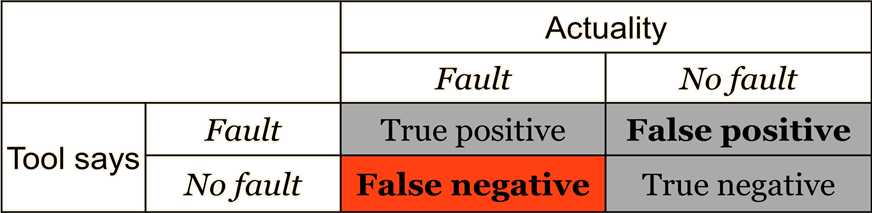

JSure: Annotate, verify, and evolve with confidence
JSure helps keep your code consistent with your design intent. JSure supports almost 50 open-source annotations to tersely (typically one or two lines) express non-trivial design intent in safe concurrency (including lock use), null references, mutability, internal access to state, abstraction bypass, API/structural pattern compliance, and many other properties.
What can JSure do for you? JSure can
• Verify concurrency design intent: @ThreadSafe, @GuardedBy, @Immutable, @RegionLock
• Verify null reference intent: @NonNull, @Nullable, @TrackPartiallyInitialized, @Initialized
• Verify patterns: @Singleton, @Utility, @ValueObject, @ReferenceObject
• Verify static structure: @Layer, @AllowsReferencesFrom, @MayReferTo
• Verify effects and aliasing: @RegionEffects, @Unique
• And more...
• Focus annotation effort on critical code, no need to annotate your entire codebase
• Annotate libraries with a full-featured library annotation editor (many Java libraries have already been annotated)
• Ensure annotations are kept consistent as your code evolves
JSure is designed for scale, soundness (in most cases), usability, and straightforward integration into your development and evaluation process. It has been used on large open-source systems such as SE for Android (~2.8 million lines of Java code) and Hadoop (~1.7 million lines of Java code).
Videos
The videos below show JSure in use. Often on widely used open source and commercial software. These videos give a sense of JSure's capabilities and how you interact with it in Eclipse. (Note that some of the videos might have been shot with an older version of the tool so please consult the documentation if something looks different.) The JSure user guide contains further documentation including a quick start, tutorials, and reference information. All the JSure annotations contain Javadoc that give several examples of their use. Our wiki contains further information on effective use of JSure annotations in your code and you can ask questions on our forum.
Introducting JSure: java.util.logging
An introduction to running the JSure tool demonstrating finding and fixing a check-then-act race condition in Logger class. The Logger class is part of the Java standard library (i.e., java.util.logging) and the bug described in this video was found with the JSure tool, reported to Sun/Oracle, and fixed in JDK 7.
Modeling in JSure: Apache Log4j's BoundedFIFO
Using JSure annotations to model the client-side locking policy used by the Apache Log4j BoundedFIFO class. In addition to showing how to manually add annotations, abductive inference of annotations by the JSure tool is demonstrated.
Using JSure to verify annotations from the book Java Concurrency In Practice
This video presents how JSure supports the verification of the annotations proposed by Goetz et al. in the book Java Concurrency In Practice: @ThreadSafe, @NotThreadSafe, @Immutable, and @GuardedBy. Examples from the open source Timing Framework project are presented, as well as from SE for Android / Android Open Source Project (AOSP). The examples highlight the fact that only a small number of annotations are needed to enable verification results, even at large scale (i.e., no false negatives) -- and that these annotations almost completely eliminate false positives.
Software Security Assurance with JSure
Using the JSure tool to specify and contingently verify security properties of a software system. This video presents JSure capabilities such as unique references and static structure that can assure restrictions on data flows are respected, along with other safeguards regarding internal attack surfaces. Further, the role of JSure to improve robustness of the system, therefore making it "harder" to exploit, is also presented.
JSure use on Security Enhancements (SE) for Android
A demonstration of using the JSure tool to verify annotations from the Java Concurrency in Practice book placed in the Android codebase by the project's own developers. This codebase is just under 3 million lines of Java code and demonstrates scalability of the JSure tool.
Analysis-based verification is different from today's crop of static analysis tools. Those tools scan code and match known bug or style patterns. While useful, this approach has a problem: the tools are guessing if code is really defective. When they guess wrong they report a false positive (where the tool says there is a fault and the code has none). Rarely do vendors of these tools discuss the insidious issue of false negatives (where the code has a fault and the tool is silent).
JSure does not guess about your program or use pattern-based analysis. It knows your intent because you expressed it as one or more annotations. JSure "stays in the gray" and avoids false negatives through the use of annotations. It may be surprising that JSure can still report false positives, however this is rare in practice and has to do with the theoretical limitations of static analysis (i.e., the verifying analyses used by JSure are conservative).
To distinguish JSure from other static analysis tools we refer to it as an analysis-based verification tool. We use the term heuristic static analysis tool for analysis tools that find bugs or style problems based upon known anti-patterns. Both are useful in practice. Our offering in heuristic static analysis is the Sierra tool.